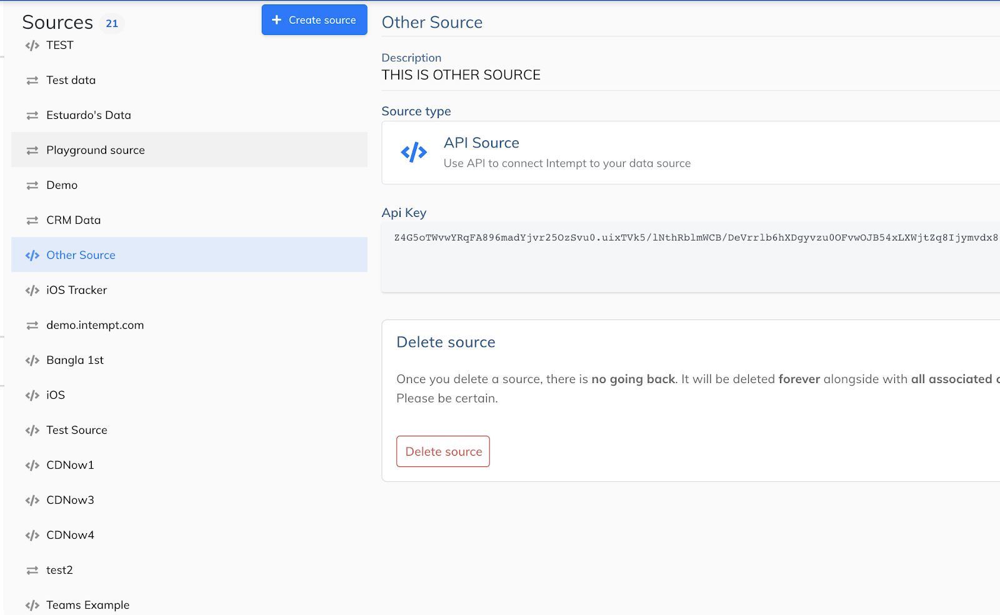

# Five Steps to Success
There are five major steps to getting started with Intempt Platform. Follow these steps through to completion to create, test, and launch your own Personalization in your app.
| Step | Description | Skillset | Approx Duration |
|---|---|---|---|
| 1. Understand what’s possible |
| Non-technical | < 1 day |
| 2. Plan and Design |
| Non-technical | ~1 week |
| 3. Start Integratio (in Sandbox) |
| Technical | Resource dependent (see below) |
| 4. Launch to End-Users! |
| Non-technical | Project dependent |
TIP
This is a tipStep 2 can be conducted in parallel with Step 3. Step 2 and Step 3 must be finalised before moving to Production and launching to end-users (Step 4).
# Technical Skills Requirement (Based on Recent Projects)
| Skills Required | Language (if applicable) | Approx Duration |
|---|---|---|
| UX / UI designers | n/a | ~1 week |
| Front-end web developer | HTML, CSS, JavaScript | ~1 week |
| Back-end web developer (server side SDKs) | Java, JavaScript, PHP, or Ruby | 1-2 weeks |
| iOS developer (Wallet SDK) | Swift or React Native | 1-2 weeks |
We are forever making improvements to our APIs, SDKs, and documentation and expect these times to reduce over time.
# a. Sign-up on Intempt Platform
The first thing you need to do to get started with Intempt Platform is to sign-up for an account. You will have to activate your account using the activation link sent to you upon registration.
# INTEMPT PLATFORM IS AVAILABLE ON DESKTOP BROWSERS ONLY
Intempt Platform is available on desktop only using either Chrome or Firefox. If you navigate to the sign-up link above on mobile, you will be allowed to proceed but we recommend a Desktop browser for the best experience. After you register you will immediately receive access to the Playground Organization. You should create your own Organization that will house your data in Sources.
# b. Choose Sources
During setup, for the Sources that you see yourself getting data from, you will create them. For a JS source, you will get a code snippet to deploy.
WARNING
- Refer to the Intempt JS SDK on Github to understand the configuration options when deploying the JS source.
API SOURCE
For all Sources that are not of Web or iOS, you can directly call the Collections and Relations API to store data. You will need an API key which you can grab from the UI.

Collections and Relations is the heart of the CDP which can store any data type. This is extensively documented at dev.intempt.com. If you need with Sources or with API Sources in particular, you can reach out to us at success@intempt.com.
# c. Create Events
# CAPTURE KEY BEHAVIORS THAT YOUR USERS DO
Intempt allows you to look at data coming in from any Source and create an Event.

# EVENT CREATION CONCEPTS
- Choose a Source
- The Source that is chosen will present the possible Collections. For example, the Web source will display Page, Interaction, Visit and Visitor
- The iOS Source will display Scene, Launch, Interaction
- The iOS Source with Beacon will display Entry and Exit
- You can use these Collections to create AND and OR filters for the Properties of the Collection.
Once you associate the owner address the token set-up process starts. This process involves running multiple blockchain transactions on Ethereum blockchain and OpenST Side Chains, so the process takes several minutes to complete.
# Create Event: Steps
| Steps | Description |
|---|---|
| 1 | Ensure an Organization is created |
| 2 | Ensure a Source is registered and collecting data |
| 3 | Create Event and choose the Source |
| 4 | The Source will list Collections. Choose a Collection |
| 5 | The Collection will list Properties. Choose a Property |
| 6 | Use the Operators available for the Data Type of the Property |
| 7 | Choose AND or OR |
| 8 | Continue creating Conditions till you have the definition you need |
| 9 | Hit Create Event |
| 10 | Rinse and repeat |
# d. Create Segment
# COMBINE EVENTS AND USE TIME-FRAME AND COUNTERS TO PINPOINT A SET OF USERS
# Create Segment: Steps
| Steps | Description |
|---|---|
| 1 | Create Segment |
| 2 | Choose Has Done or Has Not Done for an event that has or has not occured |
| 3 | Choose Count Of for an Event that needs to be counted |
| 4 | Choose a timeframe |
| 5 | Choose a Profile for any Profile properties that are registered (for the Sources in the system) |
| 6 | Choose an operator |
| 7 | Choose AND’s and OR’s to chain |
| 8 | Rinse and repeat |
# e. Retrieve segments at real time
There are two ways to call Intempt and get Segment information. One is by querying a Segment for its Users and the other is by querying a User for it’s Segments
Check out our Retrieve Segments at Runtime guide for more detailed instructions.